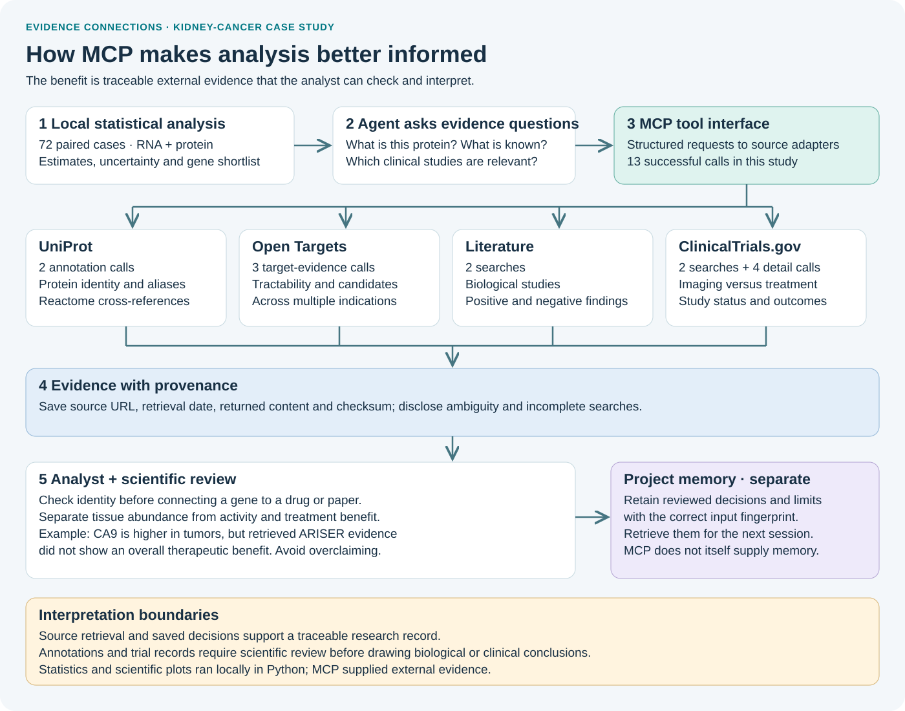

CPTAC KIDNEY CANCER · PROTEOGENOMICS
Kidney cancer:
RNA, proteins and biological evidence.
Paired tumor and adjacent-normal measurements in 72 patients, with a sensitivity analysis in 37 early-stage cases. Statistical analysis, external evidence and persistent project decisions support a reproducible research record.
Exploratory research; no treatment-efficacy or causal claims.
Key findings
CA9 and NNMT were higher in tumor tissue in both assays. MTOR abundance was lower; abundance alone does not establish kinase activity. VEGFA RNA was higher, while protein coverage was insufficient for inference. NDUFA4L2 and MT1H were selected for exploratory follow-up.
The main directions persisted in the Stage I/II sensitivity analysis. These 37 patients are part of the original cohort, so this is not independent validation.
Missingness, tissue composition, batch effects and selection remain limitations. RNA and protein estimates use different assay scales and should be interpreted separately.
Read the analysis
Paired molecular analysis
72 patients: cohort preparation, gene-level estimates, uncertainty and biological evidence.
Read full report →Early-stage sensitivity
37 Stage I/II patients: stricter coverage, stability of findings and clinical-trial context.
Read sensitivity analysis →How MCP supports the analysis

Thirteen MCP calls retrieved annotations, target evidence, literature and trial records. Six stored decisions were retrieved for the next session. Scientific inference and figures were produced locally; source retrieval does not replace statistical judgment.
Analysis figures
Open any figure at full size. See the reports for definitions, uncertainty and limitations.
Data and interpretation
Processed matrices came from LinkedOmics; published CPTAC clinical annotations supplied histology and specimen exclusions. UniProt provides mappings and Reactome annotations; Open Targets supplies target and candidate records across indications. Publications and trial records add context, including negative findings. Pathway annotations are not enrichment tests, and drug-target links do not establish kidney-cancer efficacy.
Data sources · Source provenance · Sensitivity-analysis specification